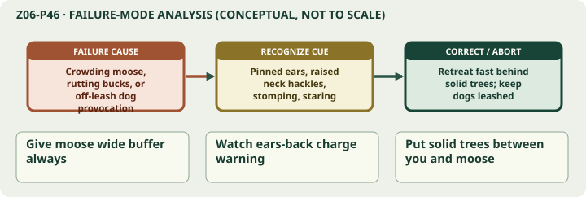

Z06-P46 · Hunting and fishing · New manuscript
Moose, Rutting Deer and Protective Parent Wildlife Boundaries
Avoid severe blunt trauma from defensive moose, rutting bucks, and protective mothers by giving large ungulates wide space.
When it applies · Northern Minnesota moose bogs, trails, and autumn hardwood forests.
Equipment · Binoculars for distant viewing, solid tree cover awareness.

Actions
- Give moose—especially cows with calves in spring/summer and bulls during autumn rut—extremely wide distance because moose charge rapidly and stomp threats with lethal force.[H16, L04]
- Recognize warning signs immediately: pinned-back ears, raised neck hackles, lip licking, head lowering, or stomping hooves mean you are far too close.[H16]
- Back away calmly and put large solid tree trunks, boulders, or a vehicle between yourself and an agitated moose or rutting buck; keep dogs tightly leashed because dogs provoke moose charges back toward owners.[H16]
Failure recognition · Crowding a moose for a photograph or letting an unleashed dog bark at a cow with calf triggers immediate high-speed defensive charges.[H16]
Verify · Observers maintain distant binocular viewing, leash dogs strictly, and yield trails immediately to large ungulates.[H16]
Stop or change course · Stop and move behind solid cover at the very first sign of pinned ears, staring, or approach by any moose or rutting deer.[H16]
Evidence and editorial notes
- H16 · Minnesota DNR · Mammals of Minnesota Species and Sign Reference (Current web edition)
- Section: Mammal ecology, seasonal movement, and sign interpretation · Conditions: Reading wildlife tracks, scat, browse, and trail patterns
Support: Substrate moisture, snow crust, and animal gait distort track dimensions; combine multiple signs and habitat context rather than single prints.
Limitations: Never handle unknown scat barehanded due to parasite eggs (e.g., Baylisascaris); sign interpretation is ecological observation, not harvest authorization. · Conflicting evidence: None noted.
Editorial note: Grounds Z06 tracking in ecology and hygiene. · Specialist reviewer: Wildlife ecologist
Primary source · checked 2026-11-25 - L04 · Minnesota DNR · Minnesota Endangered, Threatened, and Special Concern Species (Current web edition)
- Section: State endangered, threatened, and special-concern species · Conditions: Habitats supporting state-listed mammals, birds, reptiles, and amphibians
Support: Unselective devices endanger state-listed species including raptors, mustelids, and turtles.
Limitations: Verify protected-species distribution and never disturb protected habitats or dens. · Conflicting evidence: None noted.
Editorial note: Protects state-listed nongame species. · Specialist reviewer: Conservation biologist
Primary source · checked 2026-11-25
Source lineage · New manuscript (Z06 P17 wildlife avoidance) · Classification · New manuscript.